梅子熟文创体系
紧握大局观，梅子熟体系的文创类型和内涵指向虽各不相同，但都紧紧围绕这了实践主题--红色美育，明确且统一。要以大众喜爱的形式弘扬红色文化，尤其是在大众普遍对红色主题产生审美疲劳和00后“整活”层出不穷的当下，文创更需要新颖实用。
传承不泥古，创新不离宗，梅子熟文创体系在保持红色严肃性的前提下贴合时代需求。
一、“信仰之歌”系列笔记本
三套设计：“信仰的光芒”笔记本还原了于家观影的场景，上下部分别为电影胶片和家居环境，投影仪的光束恰好照亮胶片上的红色字迹“非红无以担”，信仰散发的光芒是红色的，而红色的内涵又在胶片上暗示，由此形成设计闭环；“信仰的足迹”笔记本采用s形构图和透视的技巧，将足迹作为线索贯穿画面，其变化象征了人生的推进，其两旁的场景刻画的是儿时亲情、青春爱情与子女承钵，均取自原诗歌组内容；“信仰的力量”笔记本采用极繁主义手账风格，元素多而不乱：以报纸、胶带打底，辅以贴画、涂鸦、干花，整体右斜，层次分明。日本投降、中华繁华、欢呼雀跃的共产主义知识分子、力量、抗日将士、群众献礼，党即是信仰，信仰的力量即是党的力量。它来自知识，来自武装，来自将士，也来自群众，它很强大，强大到既可以赶走侵略者，也可以重建盛世繁华。
二、“先驱之诗”系列钥匙扣
共有三版，均呈钥匙形状。匙码由数字75变换而来，象征该系列有75首诗歌；匙头图案为其中3首诗歌—《我》、《灯蛾》、《榴花》的意象—火柴、灯蛾、榴花；匙柄刻有对应的诗句。寓意先驱留下的文化遗产犹如钥匙，既可打开过去的门，了解历史；又可打开未来的门，指引方向。
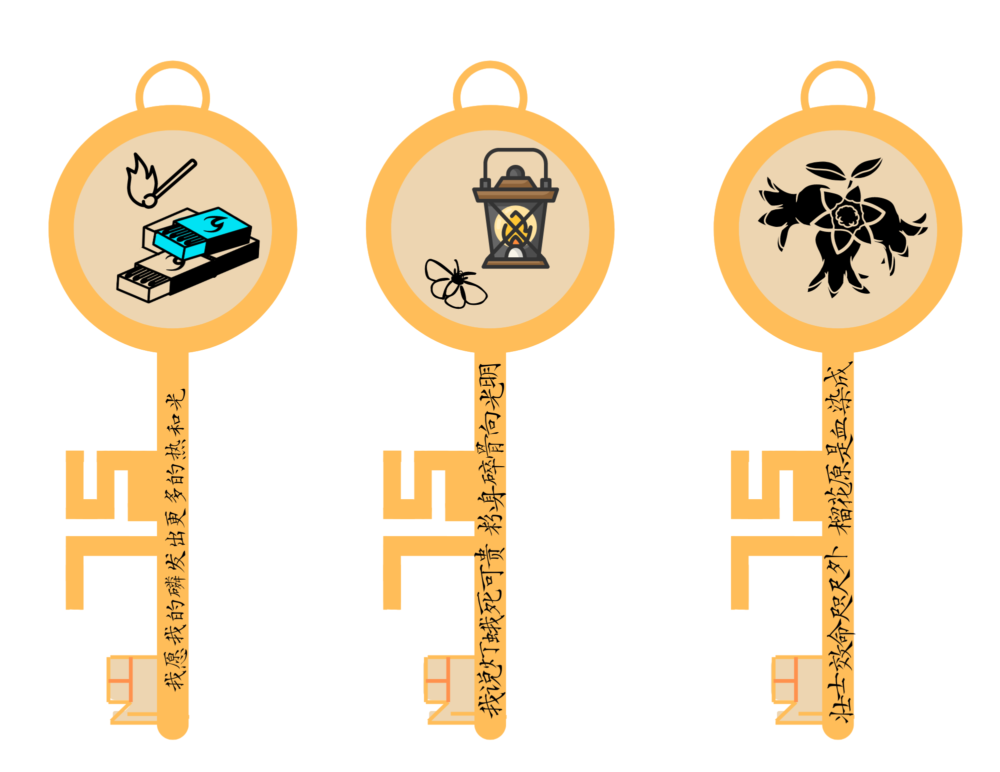 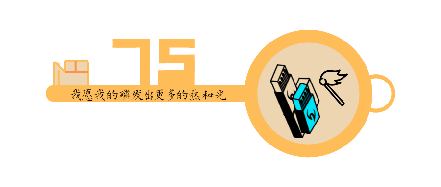 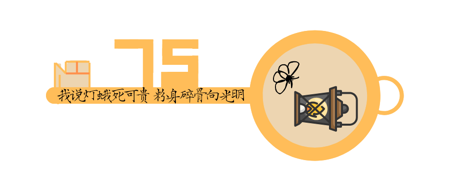 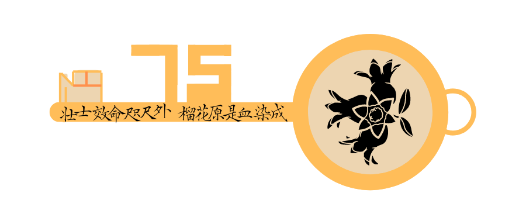三、“英魂之曲”系列帆布包
由线上实践《英魂之曲》的歌词内容衍生而来，共有三版，分别为觉醒、传播、投身，呈递进关系。“觉醒”以《宣城第四师范学校校歌》为出发点，暗示了革命者在学校接受新思想，灵魂开始觉醒；“传播”综合了《我们越亲近了春天》《假如我为了真理而牺牲》《光明赞》等歌词内容，是革命者觉醒后热情传播革命思想的具现；“投身”以《我不能把枪放下》《我们的队伍在行进中》为蓝本，展现了革命者终于投身革命，无论翻山越海、白天黑夜，都坚持革命、坚持战斗的余生。
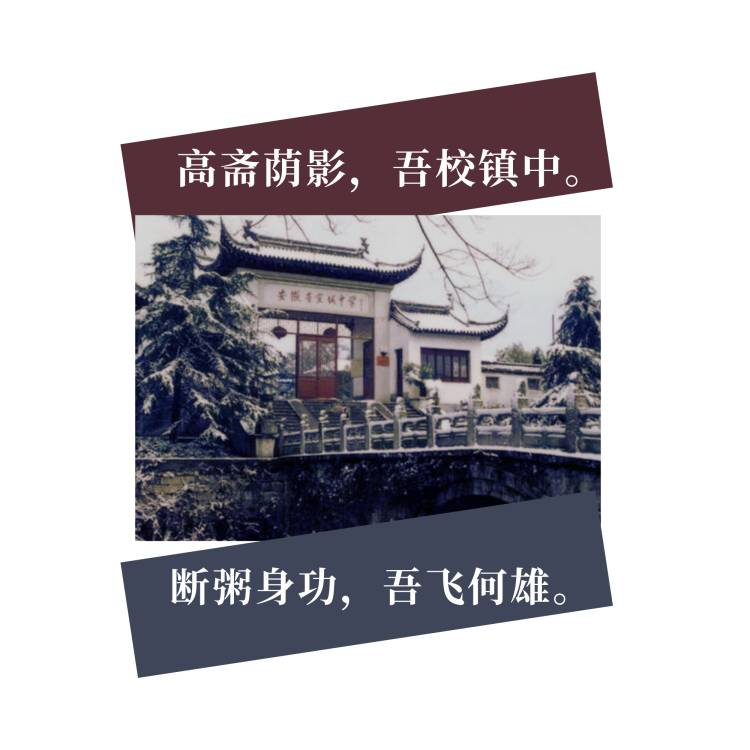 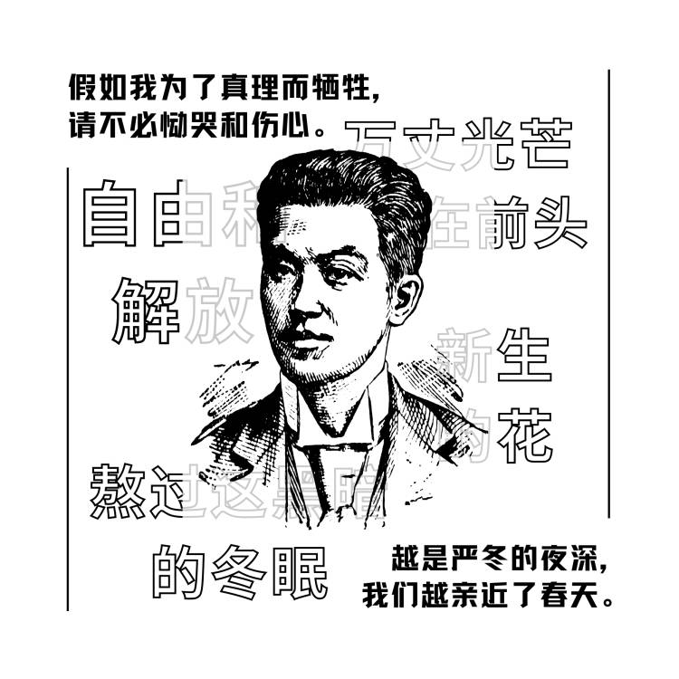 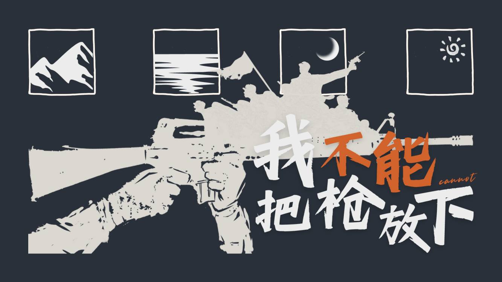四、垦荒主题万年历
该文创是对垦荒老兵的致敬。万年历上方两排画板分别展现了垦荒队辛勤开垦的身姿和垦荒伊始至今所经过的时间。万年历本就与时间关系紧切，更加凸显老兵对垦荒的坚守、对党的忠诚。
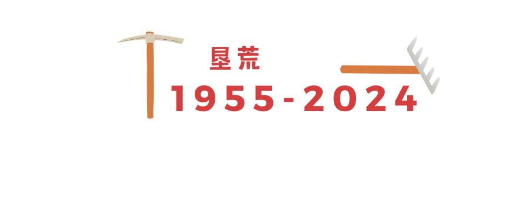五、退役老兵回忆录系列U盘
分有两版，两位老兵（A与B）分别对应两版u盘，主题分别为“义务”和“吃苦”，均提炼自老兵们回忆时反复重复的语句。画面上，义务版u盘重在展现老兵A的经历：踩着泥巴路长大、当兵时艰苦地训练、跟着书记养鸭子做羽绒服发展乡村；吃苦版U盘重在刻画老兵B的思想：无论是在村子里放牛的农村娃娃，还是在军营训练的士兵，还是在城里生活的打工人，都逃不过吃苦，也必须要吃苦。
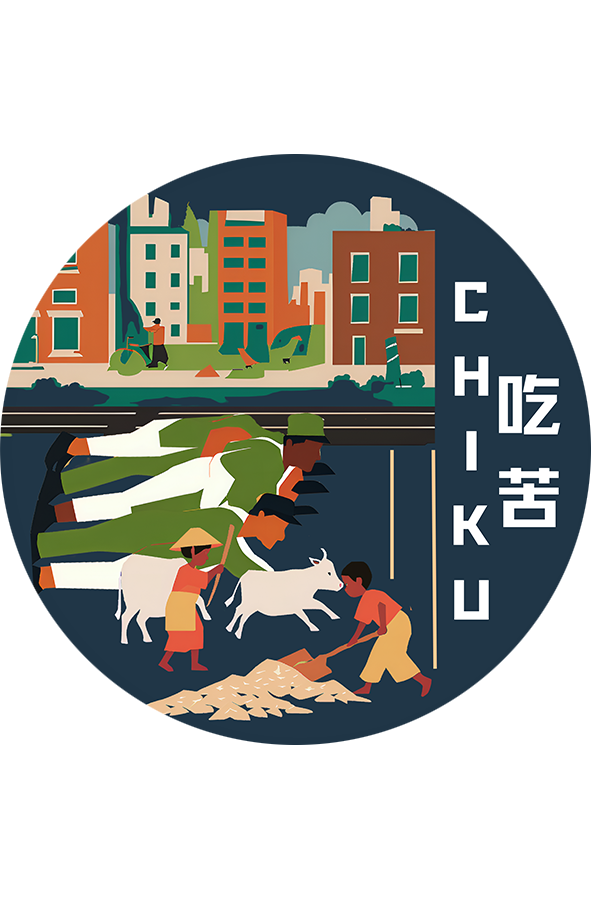 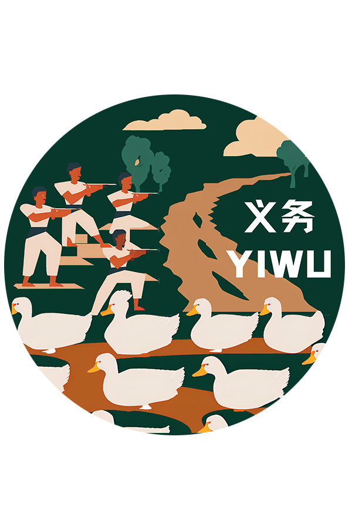六、共青城风景系列手机支架
共有三版，支架上刻画的图案均来自于实践团队在共青城独立拍摄的风景影片。该系列文创是实践团响应号召、实地走访的凭证，旨在展现共青城的新时代面貌，宣传这座红色的城市。
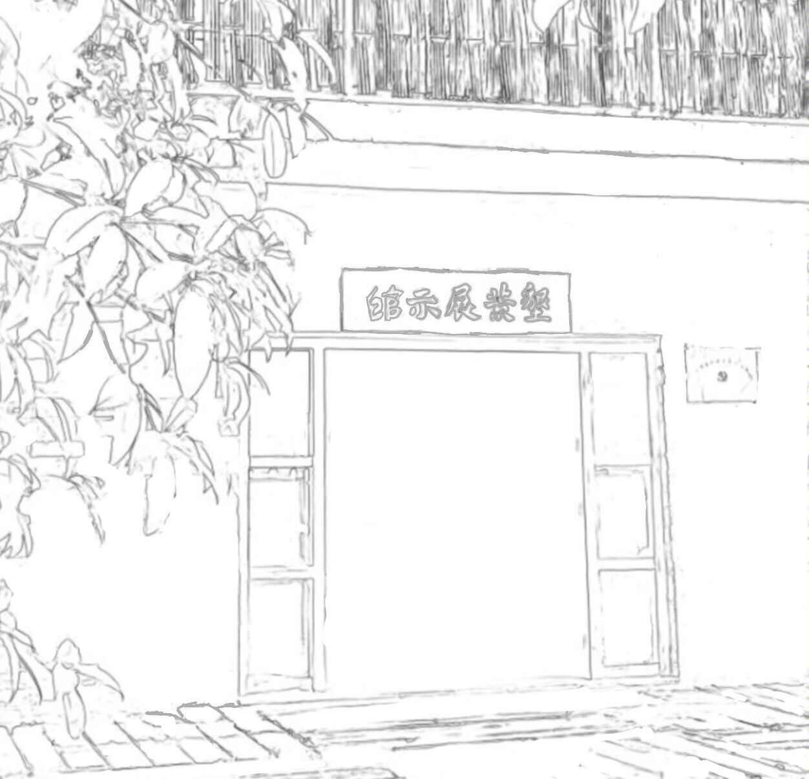 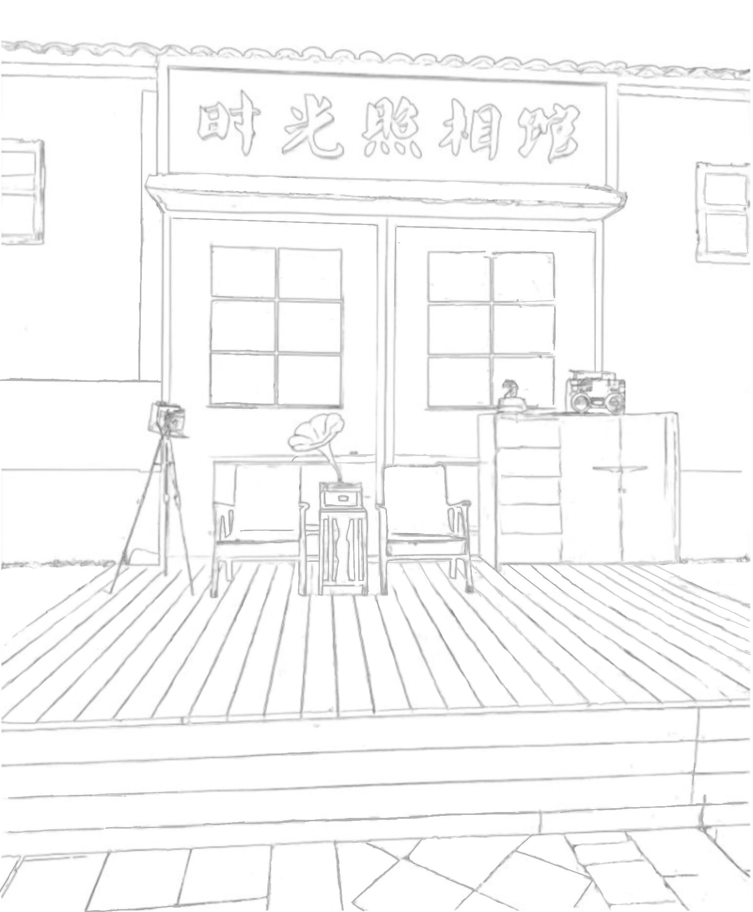